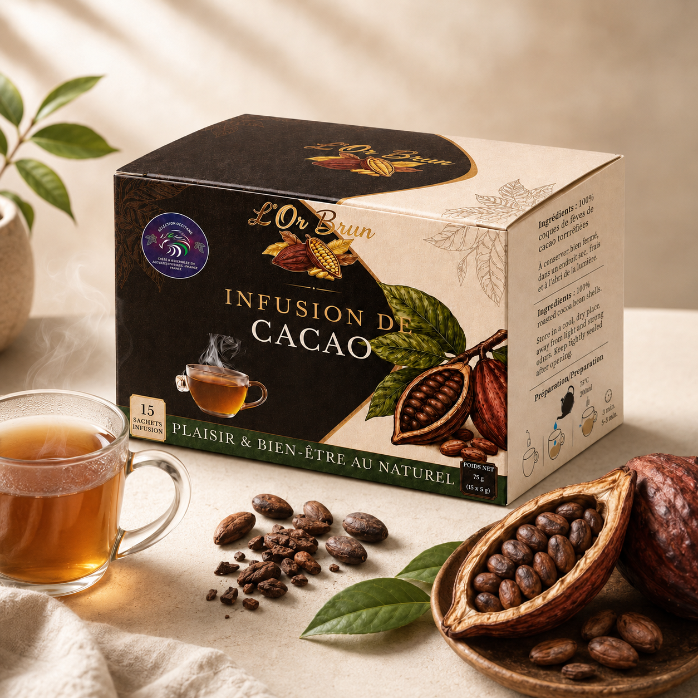

À propos
de KIC
Fondée en mars 2026, KIC — Konan Industrie et Chocolaterie — est une société française spécialisée dans l’approvisionnement et la commercialisation de produits agricoles semi-finis issus de filières durables.
KIC rapproche les producteurs agricoles des artisans-transformateurs européens grâce à des matières premières de qualité, traçables et adaptées aux exigences des marchés professionnels.
- 2026
- Année de
création - B2B
- Solutions pour
professionnels - UE
- Distribution en
Europe


Construisons
votre projet
Vous recherchez un produit cacao, un échantillon ou une solution adaptée à vos volumes ? Présentez-nous votre activité et vos besoins : KIC vous apportera une réponse ciblée.
